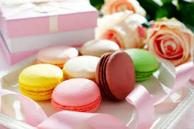

馬卡龍
作法：
1.將蛋白和細砂糖隔水加熱煮至糖溶化，再打發至硬性發泡。
2.加入杏仁粉拌勻至較軟、發亮，再加入食用色素拌勻至可自然留下的程度。
3.將上步驟粉漿放入擠花袋，在烤盤上擠成圓形，灑上開心果碎裝飾，放入上火130度、
下火140度烤箱烤15分鐘，再改為上下火100度續烤15分鐘。
4.香堤鮮奶油：將動物性鮮奶油、細砂糖和櫻桃白蘭地打發。
5.組裝：取成品盤刷上覆盆子果醬裝飾，再放上一個馬卡龍，取香堤鮮奶油以擠花袋擠在馬卡龍上，
然後放上切好的草莓4瓣，再疊上一個馬卡龍，
最後在上面灑上糖粉和草莓巧克力粉即完成。

Cedric Grolet
草莓蛋糕
焦糖布丁
心得